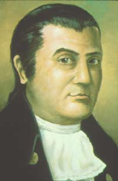

|
by Stefan Bielinski Stewart Dean was early Albany's most famous navigator. His voyage from Albany to China and back during the mid-1780s represents a pioneering effort to connect the emerging city of Albany with the outside world.  Stewart Dean was born on the eastern shore of Maryland in 1748. Eighteen years later, the name of Stewart Dean, "an orphan," appears in the Somerset County records as he was apprenticed for three years to learn the arts of sailing and navigation under Maryland merchant Henry Lowe. Freed from his apprenticeship on his twenty-first birthday, Dean soon migrated north to the Hudson Valley and entered the maritime trade. In 1771, the new Albany Gazette noted that his sloop, the Beaver, had sailed for the West Indies with a cargo of flour and lumber. He was one of only a handful of Albany-based skippers who ranged beyond the Hudson. In 1773, he was identified as a "mariner" when he posted a bond to marry Albany native and shipwright's daughter Pieterje Bradt. After the wedding, the couple settled in Albany and began to raise a family. About 1775, Dean purchased a lot along the newly reclaimed Albany waterfront. Located near the city docks, the riverside home he built on Dock Street would be Dean's base of operations for many years. With the outbreak of the war, Stewart Dean offered his services to the American cause and was commissioned a privateer in June 1776. During the next three years, his ship, the Beaver, cruised the Caribbean Atlantic - taking prizes and loading cargoes to aid the American war effort. His biographer, William Wilgus, has devoted an entire chapter to Dean's nautical exploits. Dean had returned to Albany in the spring of 1777 and was enlisted by the Albany Committee of Correspondence to seize and appraise the sloop of Tory skipper Robert Hoaksley. In January 1778, he was elected a member of the Committee. At the same time, (1776-77), he served the American cause on land as he accompanied the Albany militia to Johnstown in 1776 and went into the Mohawk Valley several times afterwards in search of Tories. In 1780, he was selected to serve as one of the Commissioners for Detecting and Defeating Conspiracies - an important arm of the political revolution charged with rooting out internal enemies during the last years of the war. In January 1782, he went to Philadelphia to build the privateer Nimrod which he sailed to the West Indies. In July, the schooner was captured by the British while at anchor in St. Kitts. Dean and his ship were carried to Antigua and later released.Back in Albany by early 1783, Stewart Dean suffered the loss of his wife while she was giving birth to their son. Inspired by the voyage of the Empress of China to the Orient, in 1784 Dean began to build a new sloop, the Experiment! By year's end, the Experiment left Albany on the first leg of a voyage to China. By the summer of 1787, Dean was back in Albany and had married Margaret Whetten - daughter of a sea captain and sister of one of his Experiment mates. Their first child was baptized in Albany in 1788. By 1807, he was the father of seven children. By 1790, Stewart Dean had re-established himself in Albany - although, over the next decade, he undertook several voyages abroad. In 1805, he was elected to the Albany city council. A few years later, he moved out to Arbor Hill but still maintained his house and dock on the Albany waterfront. He spent the next decade there surrounded by grandchildren. In 1826, Dock Street was re-named for him. In 1830, Stewart (age 83) and Margaret Dean left Albany to live in the home of their children in Lima New York. In 1833, he was granted a pension for service during the American Revolution. Stewart and Margaret moved with them (the Sedgwicks of Lima) to New York City. Stewart Dean died in New York City in August 1836. His newspaper obituary said Captain Dean was ninety years old and a "Famous Albany Navigator." His grave stone stands today in the churchyard at Manhattan's historic Trinity Church. Historical artist Len Tantillo's painting depicting Dean's return to Albany on the Experiment in 1787 and the process of creating it have become major resources for furthering our understanding of the people of colonial Albany and their world at a critical point in the community's history. Stewart Dean was early Albany's first famous sailor and one of a number of important newcomers who were major agents of change in the evolution of this early American city.
Portrait commemorating Stewart Dean during his sailing days. Painted by historical artist L. F. Tantillo from a miniature appearing in Wilgus, Stewart Dean. An on-line article by Len Tantillo presents the artist's perspective on Dean. See also, Bicentennial History of Albany for an early account of Dean's historic voyage. Dean's birth date of July 4, 1748 is taken from his gravestone. First references identify him as an orphan. We have not yet encountered the names of his parents. We are considering transcribing and including chapter four entitled "Naval Exploits" from The Life of Captain Dean in this exhibition. first posted: 7/31/01; last revised 10/3/15 |
{kind=link}